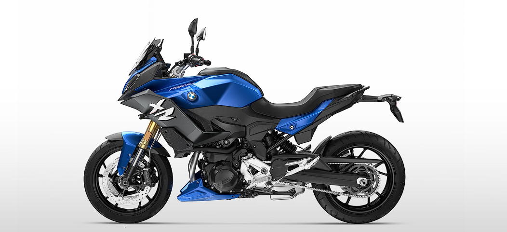

Modeller
X Series
M Series
1 Series
2 Series
3 Series
4 Series
5 Series
6 Series
7 Series
8 Series
Z4 Series
Elektrikli Modeller
İ Series
İX Series
Motosikletler
Advanture
Heritage
Sport
M
Aksesuarlar
Online Hizmetler
Katologlar
MY BMW
Fiyat Listesi
İletişim
Yakıt Tipi
Güç
Azami Hız
Benzin
210 bg
314 km/sa
F 900 XR DAHA YÜKSEĞE, DAHA HIZLI, DAHA İLERİYE.
XR atletik özellikler ve uzun mesafe performansının tavizsiz bir kombinasyonunu ifade eder. Her virajda daha fazla adrenalinle F 900 XR’ı sürerken hiç durmadan virajların peşinden koşun. Yalnızca heyecan verici tasarımı bile saf bir performansı vadeder. Dik, rahat oturma konumu ile rüzgar ve kötü hava koşullarına karşı koruma sayesinde sürüşün ne zaman biteceğine karar veren siz olun.
Eksiksiz donanım sayesinde spor aktiviteler, yolculuklar veya şehirde dolaşmak için hazırsınız. F 900 XR size ve sportif duruşunuza en uygun motosiklettir. #MeydanOkumaktanAslaVazgeçme
Net gövde tasarımıyla tartışmasız bir XR.
F 900 XR’ın motivasyonu ilk bakışta fark edilir. Yeni geliştirilen çarpıcı LED lamba en iyi bildiğiniz duyguyu, yani F 900 XR’ın hakim doğasını öne çıkarır. Kaplamaların daha da artırdığı bu dinamik heyecan, keskin kenarlarla belirginleşen saldırgan tasarımla desteklenir. İnce ve kısa görünen kuyruk kısmı, bu uzun mesafe koşucusunun atletik enerjisini harekete geçirir.

Dik ve rahat.
F 900 XR’ın ergonomik özellikleriyle günün sonunda kilometre sayacı yeteri kadar yükselirken tüm vücudunuz da enerjiyle dolacak. Tamamen sportif uzun mesafe performans için tasarlanan modelin koruyucu ön kaplamaları sayesinde bir virajdan diğerine heyecanla sürüşe devam edin. 775 ile 870 mm arasında değişen sele yüksekliği, tam olarak ayarlanabilen kol ve esnek iki kademeli ön camın koyduğu kural basit: Maksimum düzeyde değişkenlik. İdeal yükseklikteki ayak dayaması ve sele, arkanızdaki yolcunun da her kilometrede yaşanan tutkuya ortak olmasını sağlar.
Dinlenirken nabzınız: 92 Nm.
Gözlerinizin önündeki yarış çizgisi ve ufka diktiğiniz bakışlarınızla her virajı sakin ve kendinizden emin bir şekilde arkanızda bırakın. Durmadan, bıkmadan. #MeydanOkumaktanAslaVazgeçme. Düz yarış pistlerine karşı bu bitmez tükenmez arzuya, her zaman daha ileri gitme içgüdüsüne sahipseniz doğru yol arkadaşlarıyla tanışın: F 900 XR’ın yüksek torka sahip sıralı iki silindirli motoru 4.500 ile 8.500 dev/dak arasında 92 Nm tork üretir. Opsiyonel Dynamic ESA, en uygun süspansiyon konforuyla son derece dengeli bir sürüş sunar. Bu güçle ileri gitmeyi arzulayanlar, diğer herkesi geride bırakır.
Kelimenin tam anlamıyla vizyoner.
Söz konusu aydınlatmaysa F 900 XR, standartları belirler. Model, orta seviye segmentte ilk kez sunulan adaptif viraj ışıklarına sahiptir. Yeni geliştirilen çarpıcı LED farlara yerleştirilen bu özellik, 7° açıda virajlarda mükemmel aydınlatma sağlar; gece veya ışığın zayıf olduğu durumlarda sürüş sırasında bariz bir avantajdır.
Sistematik güvenlik.
Modeldeki birçok yenilik, keyifli ve rahat bir sürüşü mümkün kılar. Dinamik Fren Kontrolü (DBC) ve Motor Freni Kontrolü (EBC) acil durum freni sırasında ve gazın aniden kesilmesi ya da ani vites düşürme anında daha fazla güvenlik sağlar.